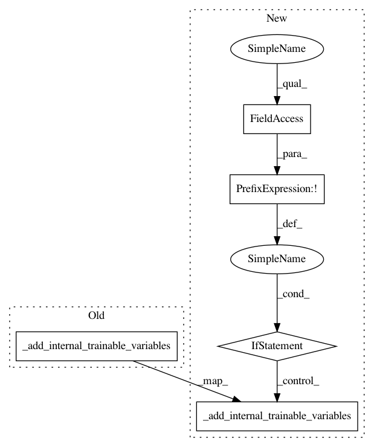

f9bcfc0c35aecbe611f7b1e46f768cd3b157a879,texar/modules/connectors/connectors.py,ReparameterizedStochasticConnector,_build,#ReparameterizedStochasticConnector#Any#Any#Any#Any#Any#,390
Before Change
output = _mlp_transform(latent_z, self._output_size, activation_fn)
_assert_same_size(output, self._output_size)
self._add_internal_trainable_variables()
self._built = True
return output, latent_z
After Change
output = _mlp_transform(latent_z, self._output_size, activation_fn)
_assert_same_size(output, self._output_size)
if not self._built:
self._add_internal_trainable_variables()
self._built = True
return output, latent_z
class StochasticConnector(ConnectorBase):
In pattern: SUPERPATTERN
Frequency: 6
Non-data size: 5
Instances
Project Name: asyml/texar
Commit Name: f9bcfc0c35aecbe611f7b1e46f768cd3b157a879
Time: 2018-08-05
Author: zhiting.hu@petuum.com
File Name: texar/modules/connectors/connectors.py
Class Name: ReparameterizedStochasticConnector
Method Name: _build
Project Name: asyml/texar
Commit Name: 269e11a506f1dfa80d95f27b3e2d3df845c80ae3
Time: 2017-12-09
Author: zhiting.hu@petuum.com
File Name: texar/modules/encoders/transformer_encoders.py
Class Name: TransformerEncoder
Method Name: _build
Project Name: asyml/texar
Commit Name: f9bcfc0c35aecbe611f7b1e46f768cd3b157a879
Time: 2018-08-05
Author: zhiting.hu@petuum.com
File Name: texar/modules/connectors/connectors.py
Class Name: MLPTransformConnector
Method Name: _build
Project Name: asyml/texar
Commit Name: f9bcfc0c35aecbe611f7b1e46f768cd3b157a879
Time: 2018-08-05
Author: zhiting.hu@petuum.com
File Name: texar/modules/connectors/connectors.py
Class Name: StochasticConnector
Method Name: _build
Project Name: asyml/texar
Commit Name: a598bab314fcd5352f70597d3bb8506c47254cc5
Time: 2018-03-17
Author: zhitinghu@gmail.com
File Name: texar/modules/decoders/rnn_decoder_base.py
Class Name: RNNDecoderBase
Method Name: _build
Project Name: asyml/texar
Commit Name: 0ac875d1a09f90e6bbeb5a14748d30f7212c1074
Time: 2017-11-24
Author: zhitinghu@gmail.com
File Name: txtgen/modules/encoders/rnn_encoders.py
Class Name: ForwardRNNEncoder
Method Name: _build